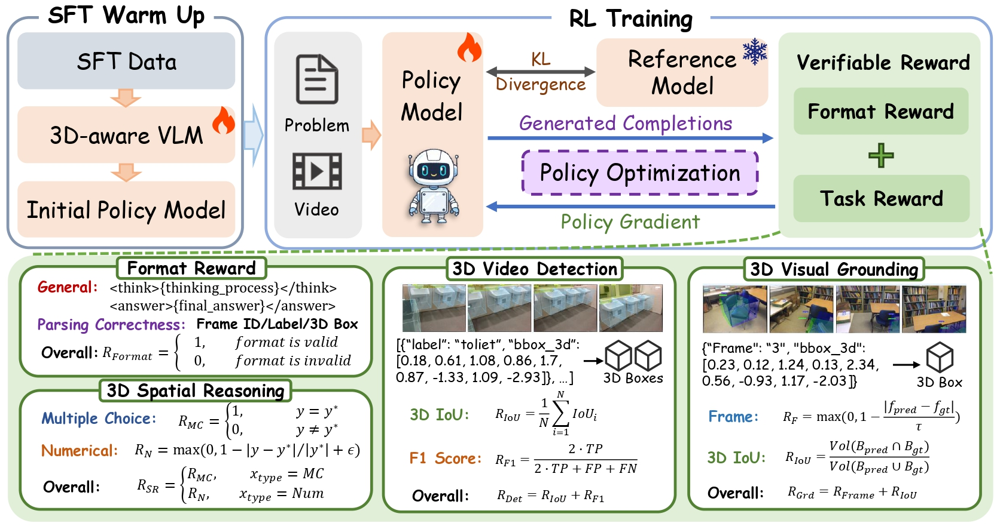
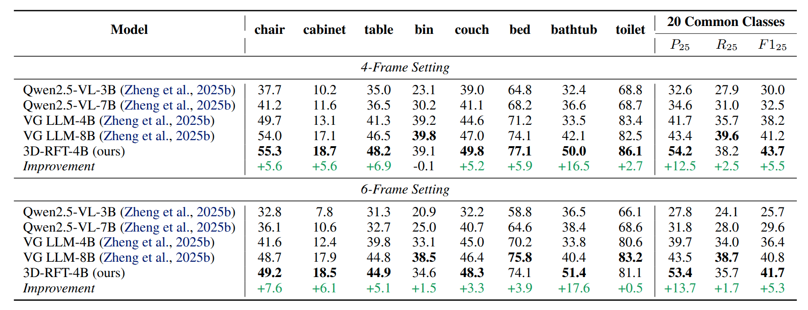
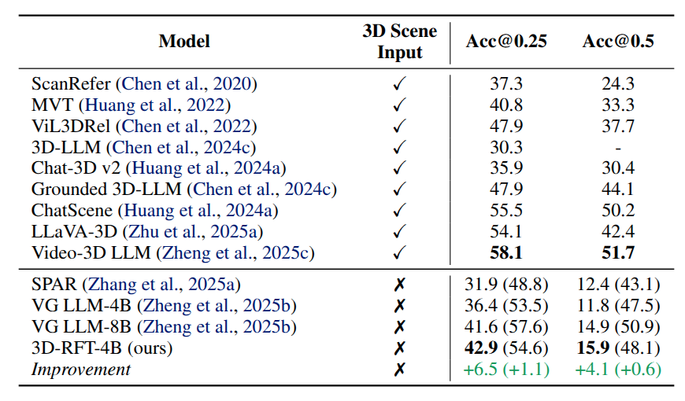
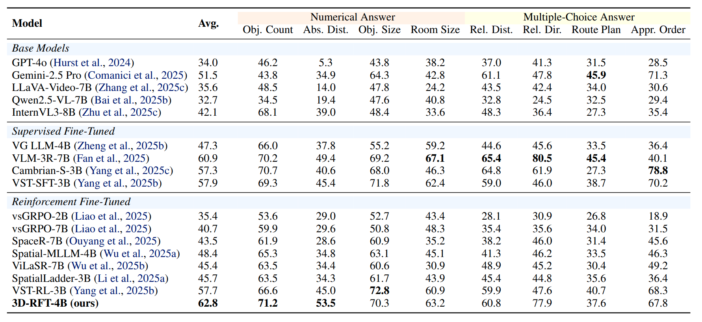
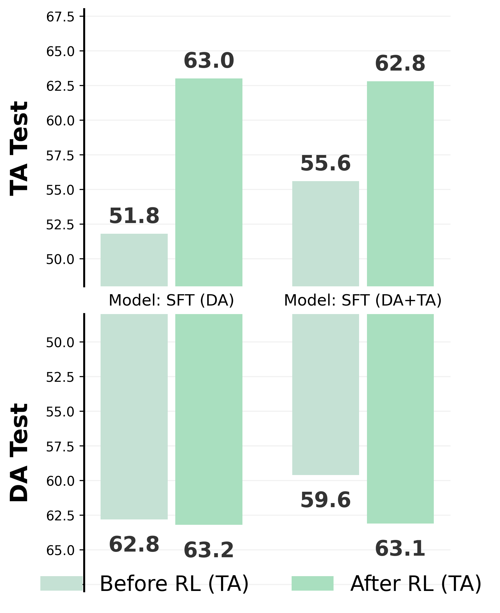
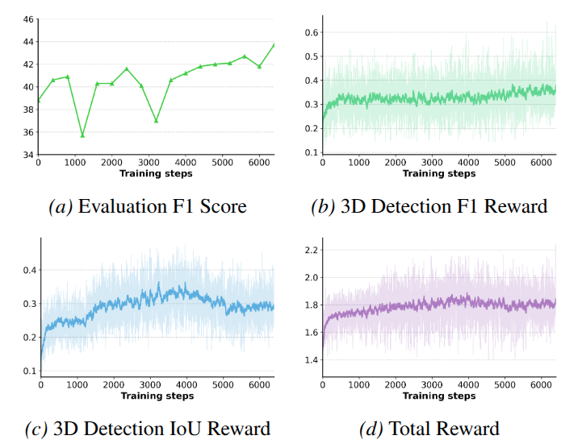
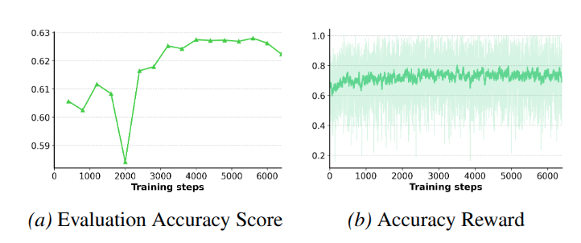

Conceptual Comparison

Comparison between SFT and 3D-RFT training paradigms. Left: Standard Supervised Fine-Tuning (SFT) relies on a per-token Cross-Entropy loss which acts as an indirect proxy, leading to a gap between training objectives and final evaluation metrics. Middle: Identical output formats for 3D Video Detection, Grounding, and Spatial Reasoning tasks. Right: 3D-RFT utilizes a Scalar Reward (Policy Gradient) derived directly from evaluation metrics (e.g., F1-Score, 3D IoU, and Accuracy) through a decoding and parsing module, ensuring the model directly optimizes for the final task performance.
3D-RFT Training Framework

The process consists of two main stages: (1) SFT Warm Up: Initial training of the 3D-aware VLM using SFT data to establish a baseline policy. (2) RL Training: The Policy Model generates completions for video-based problems. A Verifiable Reward is calculated based on Format Reward (adherence to structured output) and Task Reward (performance in 3D Video Detection, 3D Visual Grounding, and Spatial Reasoning using metrics like 3D IoU and F1 Score). The model is optimized via Policy Gradient while maintaining a KL Divergence constraint relative to the frozen Reference Model.
Evaluation Results on 3D Perception
Quantitative results on ScanNetDetection. In this table, we present the comparison with baseline models and report the performance improvement between the SFT baseline (VG LLM-4B) and 3D-RFT-4B (ours). The main conclusions: 1) 3D-RFT-4B significantly enhances detection performance over the SFT baseline. 2) 3D-RFT-4B outperforms the larger VG LLM-8B.

Quantitative results on ScanRefer. The content in “()” indicates results with proposal refinement. The main conclusions: 1) 3D-RFT significantly enhances performance compared to the SFT baseline. 2) 3D-RFT-4B outperforms the larger VG LLM-8B.

Evaluation Results on 3D Spatial Reasoning
Quantitative results on VSI-Bench. We include zero-shot results of base models, and test results of models after SFT and RFT. 3D-RFT consistently improves spatial reasoning performance. Notably, 3D-RFT-4B significantly outperforms some larger models, demonstrating the effectiveness of RFT in optimizing spatial reasoning capabilities.

3D-RFT consistently improves spatial reasoning performance. As shown in Fig. 3, we present evaluation results regarding two SFT checkpoints, and compare their performances between “before” and “after” RFT. The results demonstrate that RFT yields consistent improvements on VSI-Bench, especially on TA test. Moreover, RFT on TA task elicits improvements on DA task. In addition, we observe that continually training with SFT yields a moderateperformance drop, which suggests the advantage of RFT.

Training Dynamics
3D Video Detection. The following figure illustrates the training dynamics of 3D-RFT on 3D video detection. The consistent rise in both Evaluation F1 Score (a) and F1 Reward (b) confirms that RFT effectively optimizes perception. Analyzing the reward components reveals a strategic shift: while the global F1 Reward (b) steadily increases, the IoU Reward (c) peaks early and then slightly declines. This indicates the policy transitions from initial geometric refinement (tightening boxes) to recall maximization (reducing false negatives). In the latter phase, the dense IoU Reward serves as a critical regulator, while the sparser F1 Reward optimizes the global balance between precision and recall. Moreover, the continuous improvement at the end implies that RLVR is a stable and effective paradigm for 3D perception tasks.

3D Spatial Reasoning. The following figure illustrates the training dynamics of 3D-RFT on the spatial reasoning task. Despite minor fluctuations, both evaluation accuracy and training rewards exhibit upward trends, confirming RFT's efficacy. Notably, the curves show a sign of saturation after 4000 steps. We attribute this to the nature of the optimization landscape: unlike perception tasks where RFT continuously refines continuous geometric coordinates, the reasoning task features a discrete text space with coarser feedback. This leads to the earlier saturation than 3D perception tasks, and potentially limits the granularity of improvement over SFT.

Citation
If you find our model helpful, feel free to cite it:
@article{3d-rft,
title={3D-RFT: Reinforcement Fine-Tuning for Video-based 3D Scene Understanding},
author={Linghu, Xiongkun and Huang, Jiangyong and Jia, Baoxiong and Huang, Siyuan},
booktitle={TODO},
year={2026}
}